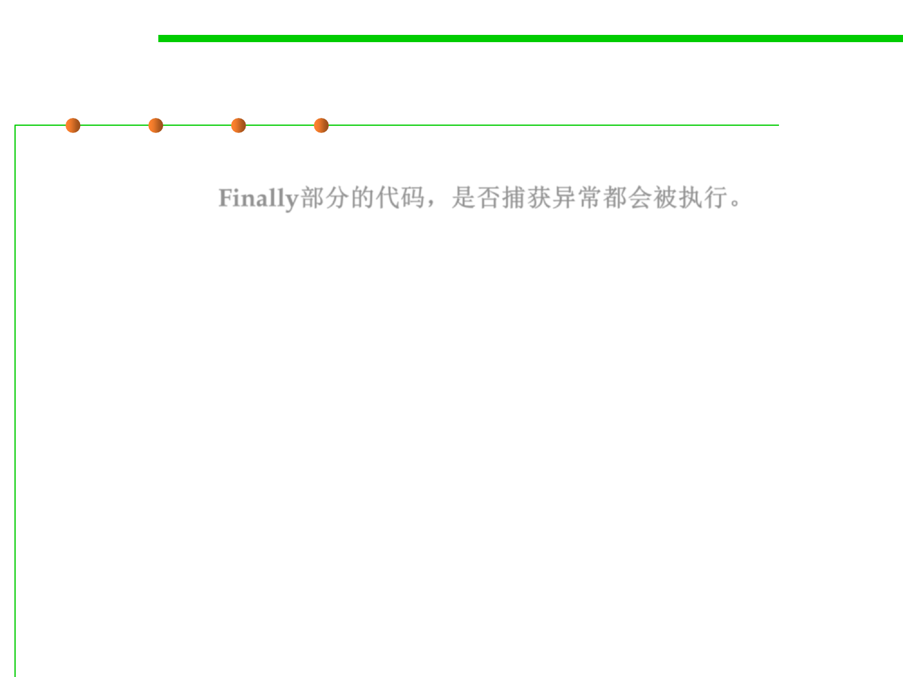

Try-Catch-Finally
7.2 Error and Exception Handling
▪ The code in the finally clause executes whether or not an exception
was caught. Finally部分的代码，是否捕获异常都会被执行。
▪ In the following example, the program will close the file under all
circumstances:
InputStream in = new FileInputStream(. . .);
try {
// 1
code that might throw exceptions
// 2
}
catch (IOException e) {
// 3
show error message
// 4
}
Finally {
// 5
in.close();
}
// 6